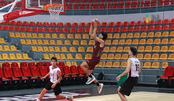

Resultados Recientes
Lakers 112 - 105 Warriors: Victoria importante de Los Ángeles en el Chase Center con 30 puntos de Anthony Davis.
Celtics 98 - 102 Heat: Miami se impone en Boston gracias a una gran actuación de Jimmy Butler.
Veracruz calificó a los Nacionales CONADE en el Básquetbol 3x3, luego de que la categoría 2007-2008 Femenil terminara en el tercer lugar del Macro Regional.

El equipo veracruzano logró su clasificación teniendo como escenario el Complejo Deportivo Hermanos Flores Magón, donde compitieron 42 representativos de las entidades que conforman la Macro Región C...